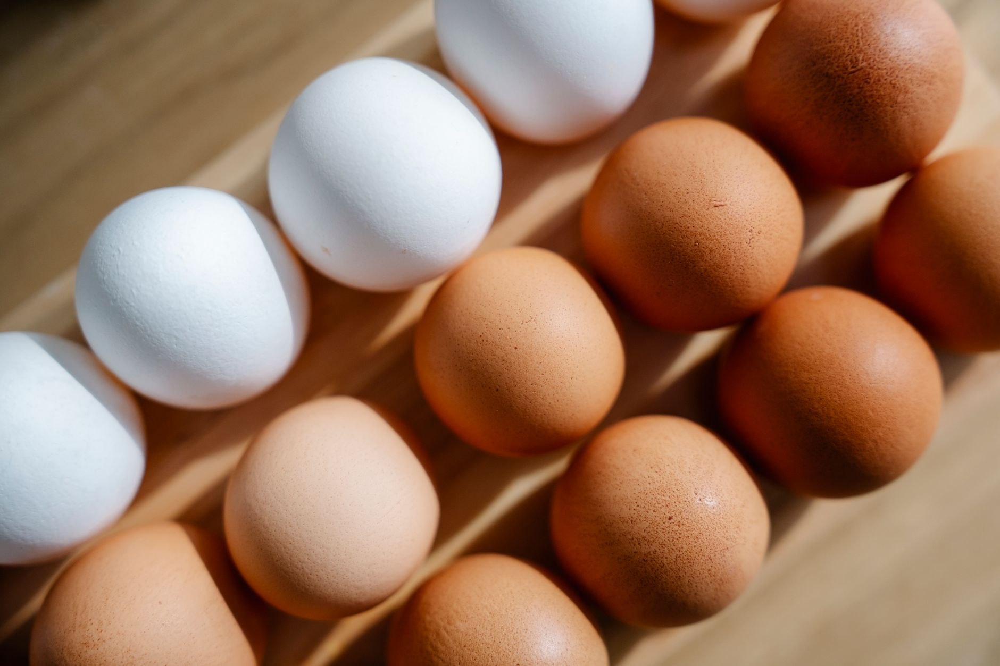

Inicio/Artículos/Nutrición · Mitos virales
Proteína: cuánta dicen los estudios que hace falta, según el contexto
10 min de lectura · Actualizado 4 de septiembre de 2026 · Por Miguel Lopez

Introducción
La proteína se ha convertido en el nutriente estrella de los últimos años: barritas, yogures "high protein", batidos y hasta el reto de "30 gramos en el desayuno" prometen que, si no llegas a cierta cifra, estás fallando. Detrás de la moda hay ciencia real, pero también bastante ruido: cifras que circulan sin mucho fundamento, el mito de que el cuerpo "no puede absorber" más de 30 gramos por comida, y confusión sobre si más proteína es automáticamente mejor. Este artículo repasa qué dicen los estudios y las guías científicas sobre la proteína en distintos contextos (sedentarismo, entrenamiento de fuerza, edad avanzada), las mejores fuentes, y qué dice la evidencia sobre el reparto a lo largo del día.
Qué es la proteína
La proteína es uno de los tres macronutrientes, junto con los carbohidratos y las grasas, y cumple funciones que ningún otro nutriente sustituye: es el material de construcción de músculos, piel, enzimas, hormonas y anticuerpos, y participa en prácticamente todos los procesos de reparación y mantenimiento del cuerpo. Está formada por aminoácidos, de los cuales nueve se consideran "esenciales" porque el cuerpo no puede fabricarlos y deben obtenerse de la dieta.
Cuánta proteína reportan los estudios, según el contexto
La cantidad diaria recomendada (RDA) oficial es de 0,8 g de proteína por kilo de peso corporal, la cifra mínima documentada para evitar una deficiencia en una persona sedentaria; como referencia, para un peso de 70 kg equivale a unos 56 g al día. Sin embargo, cada vez hay más consenso científico en que esa cifra es un suelo, no un objetivo óptimo para todos los contextos. La investigación en personas que entrenan fuerza de forma regular suele situar el rango útil entre 1,6 y 2,2 g por kilo de peso corporal; en adultos mayores, los estudios reportan un rango de 1 a 1,6 g por kilo, asociado a una mejor preservación de masa muscular y fuerza frente a la pérdida propia de la edad. Como referencia general, la evidencia actual no muestra beneficios adicionales claros al superar los 2 g por kilo de forma sostenida, y algunos estudios asocian un consumo excesivo y mantenido con un mayor riesgo de enfermedades crónicas.
Mejores fuentes: animales y vegetales
Las fuentes animales (carne, pescado, huevos, lácteos) suelen ser proteínas "completas", es decir, aportan los nueve aminoácidos esenciales en cantidades adecuadas: 100 g de pechuga de pollo aportan unos 31 g de proteína, el salmón unos 24 g, y un yogur de 170 g, unos 17 g. Las fuentes vegetales (legumbres, tofu, tempeh, frutos secos, cereales integrales) a menudo son incompletas de forma individual, aunque hay excepciones como la quinoa y la soja, que sí son completas; combinando distintas fuentes vegetales a lo largo del día (por ejemplo, legumbres con arroz) se cubre igualmente el perfil completo de aminoácidos, sin necesidad de combinarlas en la misma comida. Conviene tener en cuenta que la proteína nunca viene sola: 100 g de solomillo aportan unos 33 g de proteína junto con cerca de 5 g de grasa saturada, mientras que un cuenco de lentejas cocidas aporta 18 g de proteína con apenas grasa saturada y 15 g de fibra añadida. Ese "paquete" de nutrientes que acompaña a la proteína, y no solo el gramaje, es lo que los estudios de seguimiento de varias décadas de Harvard asocian con la diferencia real para la salud a largo plazo.
El mito de los "30 g por comida" y si importa el momento del día
Es uno de los mitos más repetidos en redes, y la versión estricta, que sostiene que el cuerpo "desperdicia" cualquier gramo por encima de esa cifra, no es exacta. Lo que sí reporta Harvard Health es que el cuerpo utiliza de forma más eficiente entre 20 y 40 g de proteína por toma para la síntesis de proteína muscular, por lo que repartir la ingesta a lo largo del día se asocia con una mayor eficacia que concentrar la mayoría en una sola comida. Pero eso no significa que una comida con 50 o 60 g de proteína sea "proteína perdida": el resto se sigue utilizando para otros procesos metabólicos, solo que no toda se dirige de forma inmediata a construir músculo. Según la evidencia disponible, lo que más pesa para cubrir las necesidades diarias es el total del día, no la distribución perfecta comida a comida; el reparto influye, pero es un matiz de optimización documentado, no una regla estricta de "todo o nada".
Es donde entra la popular "regla del 30-30-30", que propone 30 g de proteína en los primeros 30 minutos tras despertar, seguidos de 30 minutos de cardio suave. Ya analizamos esta tendencia concreta en profundidad (qué parte tiene respaldo y qué parte es exageración) en nuestro artículo sobre la regla 30-30-30 y la proteína en el desayuno. En líneas generales, la investigación asocia el consumo de proteína después de entrenar fuerza (dentro de una ventana de aproximadamente una hora) con una recuperación y un crecimiento muscular ligeramente favorecidos, pero los estudios describen la llamada "ventana anabólica" como mucho más amplia de lo que se pensaba hace años: el total de proteína del día pesa más, según la evidencia, que la precisión del momento exacto.
Qué asocia la evidencia con un reparto más eficaz de la proteína
Esto no es una lista de instrucciones personalizadas, sino lo que los estudios y las guías generales describen sobre el reparto de proteína a lo largo del día:
- Una fuente de proteína en cada comida principal, en lugar de concentrarla toda en la cena, se asocia con una síntesis de proteína muscular más constante a lo largo del día.
- En personas que entrenan fuerza, la investigación indica que el total diario acumulado pesa más que la precisión del momento exacto tras el ejercicio.
- Combinar fuentes vegetales variadas (legumbres, cereales integrales, frutos secos) a lo largo del día cubre el perfil completo de aminoácidos igual de bien que combinarlas en la misma comida, según la evidencia sobre patrones vegetarianos y veganos.
- Batidos y barritas de proteína son prácticos, pero los estudios de seguimiento a largo plazo señalan que la comida real suele aportar más nutrientes adicionales por la misma cantidad de proteína.
Seguridad: ¿es mala la proteína para los riñones?
En personas con riñones sanos, no hay evidencia sólida de que un consumo alto de proteína (dentro de rangos razonables, hasta unos 2 g por kilo) cause daño renal. El mito viene, en parte, de una recomendación real que sí está documentada para otro grupo: las personas con enfermedad renal o hepática diagnosticada, para quienes limitar la proteína según pautas médicas forma parte del tratamiento, ya que un riñón dañado tiene más dificultad para procesar el exceso.
Quién debería consultar antes de modificar su consumo de proteína
Las personas con enfermedad renal o hepática diagnosticada deben seguir las pautas específicas de proteína que les indique su médico o dietista, ya que un consumo excesivo puede sobrecargar órganos que ya no funcionan con normalidad. Lo mismo aplica a quienes tienen gota (por su relación con ciertos alimentos ricos en purinas) o a quienes estén considerando un cambio drástico en su ingesta de proteína por cualquier motivo médico: la recomendación general es consultar con un profesional sanitario en lugar de guiarse solo por cifras genéricas de internet.
Conclusión
La proteína merece la atención que recibe, pero no todas las cifras y reglas que circulan tienen el mismo respaldo científico. La RDA de 0,8 g por kilo es el mínimo documentado, no un objetivo universal; la investigación en personas que entrenan fuerza o en adultos mayores describe rangos más altos, entre 1 y 2,2 g por kilo según el grupo. El mito de que solo se "aprovechan" 30 g por comida no resiste el análisis: los estudios señalan que lo que más importa es el total del día, con fuentes variadas (animales y vegetales) repartidas de forma razonable, dentro de una alimentación que también cuide el resto de nutrientes. Quien tenga una enfermedad renal o hepática, gota, u otra condición que requiera control dietético debería consultar a su médico o dietista antes de modificar su ingesta de proteína.
- ¿Cuánta proteína reportan los estudios como necesaria al día?
- El mínimo documentado (RDA) es 0,8 g por kilo de peso corporal. La investigación en personas que entrenan fuerza con regularidad reporta un rango útil de entre 1,6 y 2,2 g por kilo.
- ¿Es verdad que solo se puede absorber 30 g de proteína por comida?
- No exactamente. El cuerpo utiliza de forma más eficiente entre 20 y 40 g por toma para construir músculo, pero el resto no se "desperdicia": se sigue usando para otros procesos. Según la evidencia, lo que más importa es el total del día.
- ¿Cuáles son las mejores fuentes de proteína?
- Entre las animales: pollo, pescado, huevos y lácteos, todas proteínas completas. Entre las vegetales: legumbres, tofu, tempeh, quinoa y frutos secos.
- ¿Cambia la necesidad de proteína con el ejercicio?
- Sí: los estudios en personas que entrenan fuerza reportan rangos de 1,6 a 2,2 g por kilo de peso corporal, por encima del mínimo de 0,8 g/kg documentado para personas sedentarias.
- ¿Es mala la proteína para los riñones?
- No en personas con riñones sanos, dentro de rangos razonables. El riesgo real documentado aplica a quienes tienen una enfermedad renal o hepática ya diagnosticada.
- ¿Importa el momento del día en que se consume proteína?
- Menos de lo que sugiere el marketing. Según la evidencia, el total diario pesa más que el reparto exacto, aunque el consumo de proteína tras entrenar fuerza se asocia con una recuperación ligeramente favorecida.
- ¿Pueden los vegetarianos y veganos cubrir sus necesidades de proteína?
- Sí, combinando legumbres, tofu, tempeh, seitán, frutos secos y cereales integrales a lo largo del día, sin necesidad de combinarlos en la misma comida.
- ¿Cuánta proteína reportan los estudios para personas mayores?
- Entre 1 y 1,6 g por kilo de peso corporal, por encima del mínimo general, un rango que los estudios asocian con una mejor preservación de masa muscular y fuerza frente a la pérdida propia de la edad.
- ¿Son necesarios los batidos de proteína?
- No: son una forma práctica de completar la ingesta, pero los estudios señalan que la comida real suele aportar más nutrientes adicionales por la misma cantidad de proteína.
- ¿Qué reporta la evidencia sobre un consumo muy alto de proteína?
- Superar de forma sostenida los 2 g por kilo no muestra beneficios claros adicionales según la evidencia actual, y algunos estudios asocian un consumo excesivo y mantenido con mayor riesgo de enfermedades crónicas, aunque el tema sigue en debate.
- ¿Qué es una proteína "completa"?
- Es la que aporta los nueve aminoácidos esenciales en cantidades adecuadas. La mayoría de fuentes animales lo son; entre las vegetales, la quinoa y la soja también lo son.
- ¿Hay una cifra ideal de proteína para el desayuno?
- No hay una cifra mágica única documentada; la evidencia señala que incluir alguna fuente de proteína en el desayuno ayuda a repartir la ingesta del día. Analizamos la cifra concreta de "30 g" en nuestro artículo sobre la regla 30-30-30.
- ¿La proteína ayuda a perder peso?
- Puede ayudar indirectamente porque se asocia con mayor saciedad y con una mejor preservación de masa muscular durante una pérdida de peso, pero no es un mecanismo mágico: el balance calórico general sigue siendo el factor determinante.
Preguntas frecuentes
Fuentes
Enlaces a la fuente original, para que puedas comprobarlo por tu cuenta.
Miguel Lopez
Periodista independiente, no profesional sanitario. Escribe sobre tendencias de salud y fitness citando siempre las fuentes primarias, para que puedas comprobarlo por tu cuenta. Más sobre el sitio.